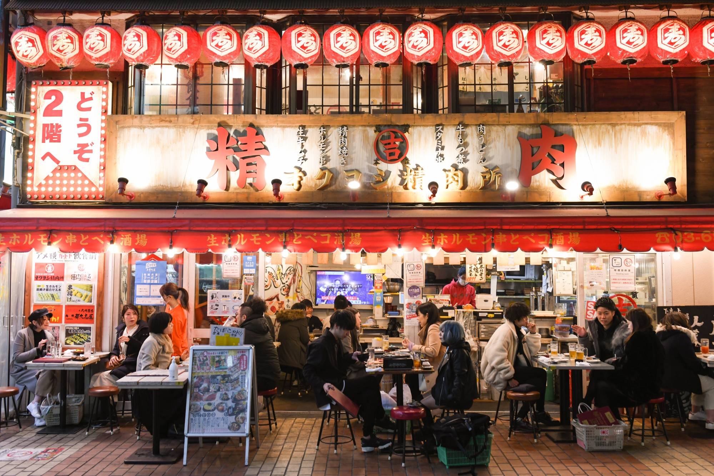
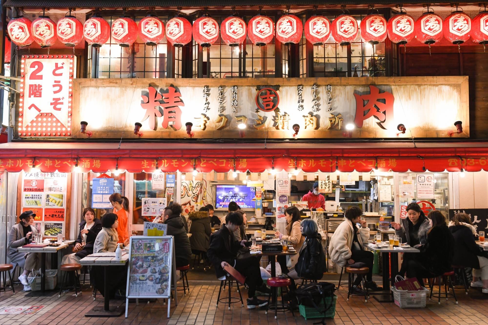

Where to Go
Japan has a wide range of must-visit destinations, each offering a unique experience. In Tokyo, explore the futuristic skyline, shop in districts like Shibuya and Shinjuku, and visit cultural sites such as the Meiji Shrine. Kyoto, the heart of Japan's cultural heritage, is famous for its stunning temples, traditional tea houses, and shrines. A trip to Hokkaido offers breathtaking landscapes, from snow-capped mountains to serene lakes. Lastly, a visit to Okinawa's tropical islands provides beautiful beaches, clear waters, perfect for relaxing.
Food to Try
Japan has a wide variety of delicious food to try, street snacks to traditional dishes. Tasting the local cuisine is a must for any visit to Japan.If I had to eat only in one city for the rest of my life, Tokyo would be it.
-Anthony Bourdain
- Sushi
- Ramen
- Tempura
- Takoyaki
- Mochi
- Rice and Curry
 
